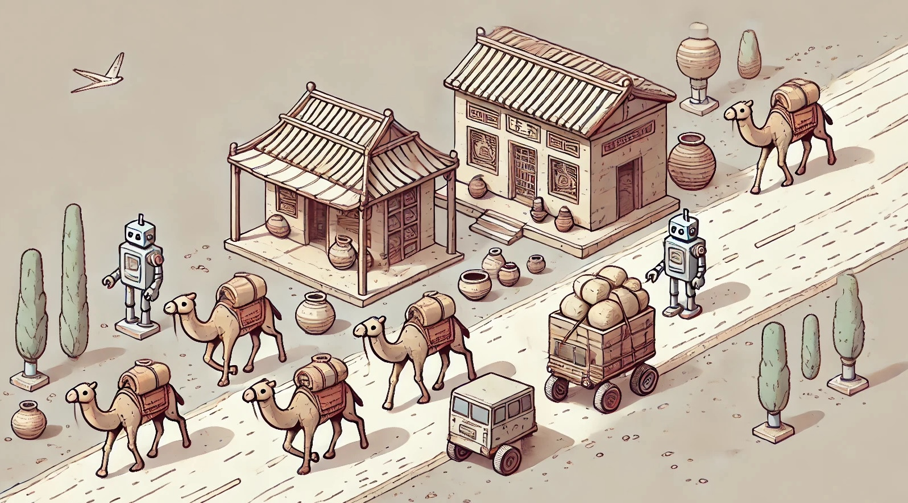

48th ICPC World Championship · Problem J
Parts of the ancient silk road passed through southern Kazakhstan. You’ve been fantasizing about a modern silk road, which has its own special features. Along your fantasy road are robots as well as stores holding stashes of tenges (the national currency of Kazakhstan). If a robot moves to a location with a store, the robot collects all of that store’s tenges for you.

The cost of moving a robot is 1 tenge for every meter moved. So the amount of profit from moving a robot to a store is the number of tenges held by the store minus the number of meters the robot has moved to reach the store.
Consider this scenario, which stretches over several days. Initially, the road is empty, with no robots or stores. Every day, either a new robot or a new store is placed on an unoccupied location along the road. Immediately before that, each existing store on the road is resupplied with tenges so that its total amount is the same as it was when it was first placed on the road, and each robot is returned to its original starting location.
For each day, you need to determine the maximum amount of profit that could be gained by moving robots to collect tenges from the stores. Note that no two robots start in the same location, but they may occupy the same location as they move. Each store can be emptied of its tenges only once during a single day.
The first line contains an integer n (1 ≤ n ≤ 2 · 105), the number of days. This is followed by n lines, where the ith line starts with an integer ti, which is equal to 1 if a new robot is added on day i, or is equal to 2 if a new store is added that day. It is followed by an integer xi (0 ≤ xi ≤ 108), denoting the location of the new robot or the new store. If ti = 2, the line contains another integer ci (0 ≤ ci ≤ 108), denoting the number of tenges at the store. All the given locations are distinct.
Output n integers, the maximum profit you can make after each day.
6 1 20 2 15 15 2 40 50 1 50 2 80 20 2 70 30
0 10 35 50 50 60